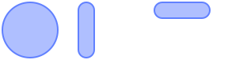
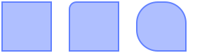
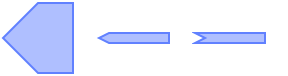
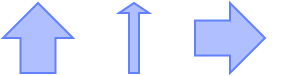
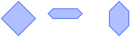
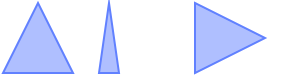
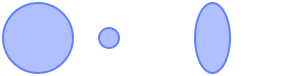
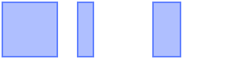

Module gears.shape
Module dedicated to gather common shape painters.
It add the concept of “shape” to Awesome. A shape can be applied to a background, a margin, a mask or a drawable shape bounding.
The functions exposed by this module always take a context as first parameter followed by the widget and height and additional parameters.
The functions provided by this module only create a path in the content.
to actually draw the content, use cr:fill(), cr:mask(), cr:clip() or
cr:stroke()
In many case, it is necessary to apply the shape using a transformation
such as a rotation. The preferred way to do this is to wrap the function
in another function calling cr:rotate() (or any other transformation
matrix).
To specialize a shape where the API doesn’t allows extra arguments to be passed, it is possible to wrap the shape function like:
local new_shape = function(cr, width, height) gears.shape.rounded_rect(cr, width, height, 2) end
Many elements can be shaped. This include:
- clients (see gears.surface.apply_shape_bounding)
- wiboxes (see wibox.shape)
- All widgets (see wibox.container.background)
- The progressbar (see wibox.widget.progressbar.bar_shape)
- The graph (see wibox.widget.graph.step_shape)
- The checkboxes (see wibox.widget.checkbox.check_shape)
- Images (see wibox.widget.imagebox.clip_shape)
- The taglist tags (see awful.widget.taglist)
- The tasklist clients (see awful.widget.tasklist)
- The tooltips (see awful.tooltip)
Info:
- Copyright: 2011-2016 Emmanuel Lepage Vallee
- Author: Emmanuel Lepage Vallee
Functions
Functions
Methods- module.rounded_rect (cr, width, height, radius)
-
Add a rounded rectangle to the current path.
Note: If the radius is bigger than either half side, it will be reduced.
- cr A cairo content
- width number The rectangle width
- height number The rectangle height
- radius number the corner radius
Usage:
shape.rounded_rect(cr, 70, 70, 10) shape.rounded_rect(cr,20,70, 5) shape.transform(shape.rounded_rect) : translate(0,25) (cr,70,20, 5)
- module.rounded_bar (cr, width, height)
-
Add a rectangle delimited by 2 180 degree arcs to the path.

- cr A cairo content
- width The rectangle width
- height The rectangle height
Usage:
shape.rounded_bar(cr, 70, 70) shape.rounded_bar(cr, 20, 70) shape.rounded_bar(cr, 70, 20)
- module.partially_rounded_rect (cr, width, height, tl, tr, br, bl, rad)
-
A rounded rect with only some of the corners rounded.

- cr A cairo context
- width number The shape width
- height number The shape height
- tl boolean If the top left corner is rounded
- tr boolean If the top right corner is rounded
- br boolean If the bottom right corner is rounded
- bl boolean If the bottom left corner is rounded
- rad number The corner radius
Usage:
shape.partially_rounded_rect(cr, 70, 70) shape.partially_rounded_rect(cr, 70, 70, true) shape.partially_rounded_rect(cr, 70, 70, true, true, false, true, 30)
- module.infobubble (cr, width, height[, corner_radius=5[, arrow_size=10[, arrow_position=width/2 - arrow_size/2]]])
-
A rounded rectangle with a triangle at the top.
- cr A cairo context
- width number The shape width
- height number The shape height
- corner_radius number The corner radius (default 5)
- arrow_size number The width and height of the arrow (default 10)
- arrow_position number The position of the arrow (default width/2 - arrow_size/2)
Usage:
shape.infobubble(cr, 70, 70) shape.transform(shape.infobubble) : translate(0, 20) : rotate_at(35,35,math.pi) (cr,70,20,10, 5, 35 - 5) shape.transform(shape.infobubble) : rotate_at(35,35,3*math.pi/2) (cr,70,70, nil, nil, 40)
- module.rectangular_tag (cr, width, height[, arrow_length=height/2])
-
A rectangle terminated by an arrow.

- cr A cairo context
- width number The shape width
- height number The shape height
- arrow_length number The length of the arrow part (default height/2)
Usage:
shape.rectangular_tag(cr, 70, 70) shape.transform(shape.rectangular_tag) : translate(0, 30) (cr, 70, 10, 10) shape.transform(shape.rectangular_tag) : translate(0, 30) (cr, 70, 10, -10)
- module.arrow (cr, width, height[, head_width=head_width[, shaft_width=width /2[, shaft_length=height/2]]])
-
A simple arrow shape.

- cr A cairo context
- width number The shape width
- height number The shape height
- head_width number The width of the head (/) of the arrow (default head_width)
- shaft_width number The width of the shaft of the arrow (default width /2)
- shaft_length number The head_length of the shaft (the rest is the head) (default height/2)
Usage:
shape.arrow(cr, 70, 70) shape.arrow(cr,70,70, 30, 10, 60) shape.transform(shape.arrow) : rotate_at(35,35,math.pi/2)(cr,70,70)
- module.hexagon (cr, width, height)
-
A squeezed hexagon filling the rectangle.

- cr A cairo context
- width number The shape width
- height number The shape height
Usage:
shape.hexagon(cr, 70, 70) shape.transform(shape.hexagon) : translate(0,15)(cr,70,20) shape.transform(shape.hexagon) : rotate_at(35,35,math.pi/2)(cr,70,40)
- module.powerline (cr, width, height[, arrow_depth=height/2])
-
Double arrow popularized by the vim-powerline module.
- cr A cairo context
- width number The shape width
- height number The shape height
- arrow_depth number The width of the arrow part of the shape (default height/2)
Usage:
shape.powerline(cr, 70, 70) shape.transform(shape.powerline) : translate(0, 25) (cr,70,20) shape.transform(shape.powerline) : translate(0, 25) (cr,70,20, -20)
- module.isosceles_triangle (cr, width, height)
-
An isosceles triangle.

- cr A cairo context
- width number The shape width
- height number The shape height
Usage:
shape.isosceles_triangle(cr, 70, 70) shape.isosceles_triangle(cr,20,70) shape.transform(shape.isosceles_triangle) : rotate_at(35, 35, math.pi/2)(cr,70,70)
- module.cross (cr, width, height[, thickness=width/3])
-
A cross (+) symbol.
- cr A cairo context
- width number The shape width
- height number The shape height
- thickness number The cross section thickness (default width/3)
Usage:
shape.cross(cr, 70, 70) shape.cross(cr,20,70) shape.transform(shape.cross) : scale(0.5, 1)(cr,70,70)
- module.octogon (cr, width, height, corner_radius)
-
A similar shape to the rounded_rect, but with sharp corners.
- cr A cairo context
- width number The shape width
- height number The shape height
- corner_radius number
Usage:
shape.octogon(cr, 70, 70) shape.octogon(cr,70,70,70/2.5) shape.transform(shape.octogon) : translate(0, 25) (cr,70,20)
- module.circle (cr, width, height[, radius=math.min(width height) / 2)])
-
A circle shape.

- cr A cairo context
- width number The shape width
- height number The shape height
- radius number The radius (default math.min(width height) / 2))
Usage:
shape.circle(cr, 70, 70) shape.circle(cr,20,70) shape.transform(shape.circle) : scale(0.5, 1)(cr,70,70)
- module.rectangle (cr, width, height)
-
A simple rectangle.

- cr A cairo context
- width number The shape width
- height number The shape height
Usage:
shape.rectangle(cr, 70, 70) shape.rectangle(cr,20,70) shape.transform(shape.rectangle) : scale(0.5, 1)(cr,70,70)
- module.parallelogram (cr, width, height[, base_width=width/3])
-
A diagonal parallelogram with the bottom left corner at x=0 and top right
at x=width.
- cr A cairo context
- width number The shape width
- height number The shape height
- base_width number The parallelogram base width (default width/3)
Usage:
shape.parallelogram(cr, 70, 70) shape.parallelogram(cr,70,20) shape.transform(shape.parallelogram) : scale(0.5, 1)(cr,70,70)
- module.losange (cr, width, height)
-
A losange.
- cr A cairo context
- width number The shape width
- height number The shape height
Usage:
shape.losange(cr, 70, 70) shape.losange(cr,20,70) shape.transform(shape.losange) : scale(0.5, 1)(cr,70,70)
- module.pie (cr, width, height[, start_angle=0[, end_angle=math.pi/2[, radius=math.min(width height)/2]]])
-
A pie.
The pie center is the center of the area.
- cr A cairo context
- width number The shape width
- height number The shape height
- start_angle number The start angle (in radian) (default 0)
- end_angle number The end angle (in radian) (default math.pi/2)
- radius number The shape height (default math.min(width height)/2)
Usage:
shape.pie(cr, 70, 70) shape.pie(cr,70,70, 1.0471975511966, 4.1887902047864) shape.pie(cr,70,70, 0, 2*math.pi, 10)
- module.arc (cr, width, height[, thickness=math.min(width height)/2[, start_angle=0[, end_angle=math.pi/2[, start_rounded=false[, end_rounded=false]]]]])
-
A rounded arc.
The pie center is the center of the area.
- cr A cairo context
- width number The shape width
- height number The shape height
- thickness number The arc thickness (default math.min(width height)/2)
- start_angle number The start angle (in radian) (default 0)
- end_angle number The end angle (in radian) (default math.pi/2)
- start_rounded boolean if the arc start rounded (default false)
- end_rounded boolean if the arc end rounded (default false)
Usage:
shape.arc(cr,70,70, 10) shape.arc(cr,70,70, 10, nil, nil, true, true) shape.arc(cr,70,70, nil, 0, 2*math.pi)
- module.radial_progress (cr, w, h, percent, hide_left)
-
A partial rounded bar. How much of the rounded bar is visible depends on
the given percentage value.
Note that this shape is not closed and thus filling it doesn’t make much sense.
- cr A cairo context
- w number The shape width
- h number The shape height
- percent number The progressbar percent
- hide_left boolean Do not draw the left side of the shape
Usage:
shape.radial_progress(cr, 70, 20, .3) shape.radial_progress(cr, 70, 20, .6) shape.radial_progress(cr, 70, 20, .9)
- module.transform (shape)
-
Adjust the shape using a transformation object Apply various transformations to the shape
- shape A shape function
Returns:
-
A transformation handle, also act as a shape function
Usage:
gears.shape.transform(gears.shape.rounded_bar) : rotate(math.pi/2) : translate(10, 10)